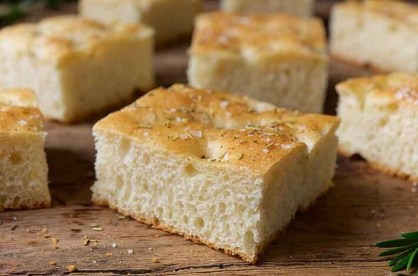

No-Fuss Focaccia

Description
This is an easy to follow focaccia recipe that I have been making since I first started making bread,
It has taken me far and doesn't use nearly as much olive oil as competing recipes. Because of this it does not need as long of
a bake time. This focaccia recipe is one of the few I've tried that do not result in an overly soggy/not crisp loaf.
I only wish I was as good a baker to have come up with this recipe myself. This is a King Arthur Baking Recipe. King Arthur baking
is the only website I use to source my recipes, as they have an invaluable resource for new bakers; The Help Line. King Arthur Baking
has a help line that you can call anytime with any question about a recipe they have on their site.
Ingredients
Dough
- 5 tablespoons olive oil, divided
- 1 1/2 cups water, warm
- 1 1/4 teaspoons salt
- 3 1/2 cups Unbleached flour
- 1 tablespoon instant yeast
- 4 teaspoons seasoning of choice
Topping
- 1 tablespoon olive oil, for drizzling
- Pizza Seasoning/Italian Seasoning
Instructions
- Use non-stick vegetable oil to grease a 9x13 pan,
drizzle about 2 tablespoons of olive oil atop the spray
- Combine remaining 3 tablespoons of olive oil with the rest of the Dough
ingredients, beat or stir on high speed for 60 seconds or until combined
- Scoop the batter into the prepared pan, cover, and let rise at room temp
for 60 minutes
- Preheat oven to 375F
- Gently poke dough all over with index finger or oiled wooden spoon handle
- Drizzle it lightly with olive oil, sprinkle with seasoning, if desired
- Bake until it is golden brown, 25-30 minutes
- Remove it from the oven, wait 5 minutes, then turn it out of the pan
onto a rack. Serve warm or at room temp.